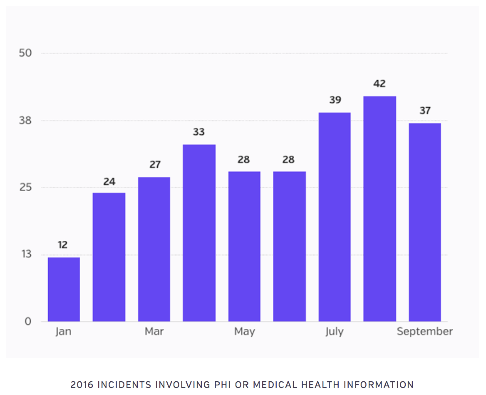
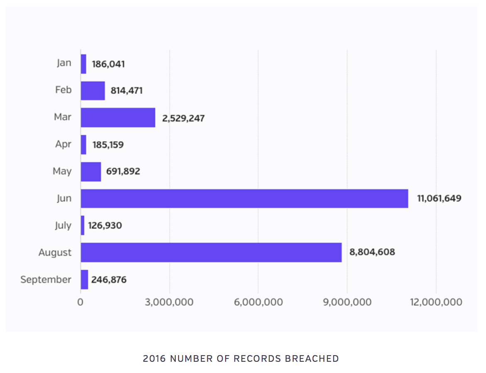

Cloud Computing and Data Security, AIMed 2016
E. Kevin Hall, M.D.
Yale University
Founder, Archetyp Mobility
www.archetyp.io
Data Breaches are Real.
The last 12 months have seen significant breaches.
"Despite being the most at-risk and perpetually breached critical infrastructure sector in the Nation, virtually all health sector organizations refuse to evolve their layered security to combat a hyper evolving threat landscape…"
"As a result, when a healthcare system is breached and patient records are stolen, the entire brutal impact of the incident that resulted from poor cybersecurity on behalf of the healthcare organization is forced onto the shoulders of the victim to deal with for the rest of their life."

(from Protenus.com)

(from Protenus.com)
Every discussion of security eventually boils down to balance between security and freedom.
Each product or effort solidifies limits at the expense of freedoms and enables freedoms at the expense of limits.
(Excluding mistakes and bad design)
From Monolith to Microservice.
This is affecting primary security practices.
A Monolithic Architecture is one where functionally separate software services are interwoven.
In the past the practice was to buy hardware and run the full software stack on those machines.
In many cases we've moved services to the cloud, but frequently the architecture is still monolithic.